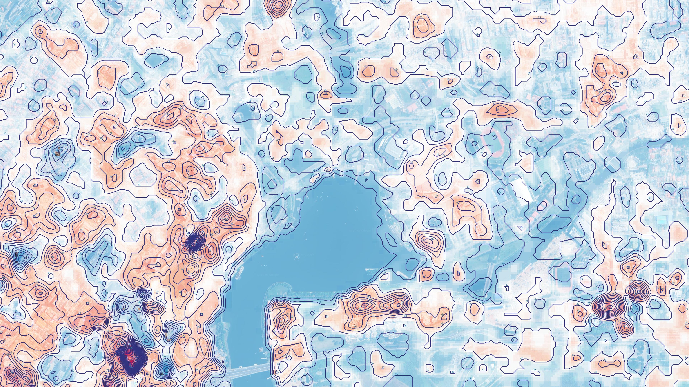

Elevation Profile
Min elevation12 m
Max elevation387 m
Mean elevation142 m
Std deviation±68 m
Terrain Risk Score
Erosion riskMedium
Runoff factor0.62
Mass movementLow
Drainage Analysis
Catchment area4.8 km²
Flow directionSE
Basin order3rd
Sink count12
▶ Methodology & Data Sources
▶ Export Terrain Report

TOPOGRAPHIC ANALYSIS — SITE EXTENT
ELEVATION
12 m ▼
▲ 387 m
Contour interval: 10 m · AHD71
Elevation Legend
⚙
LowMidHigh
Terrain Insights
Dominant drainage SE
Primary flow paths converge in southeast basin. Check culvert sizing for haul road crossings.
Check Required
Stable plateau found
140–180 m band shows <3° slope over 1.2 km². Suitable for infrastructure footprint.
Buildable Zone
Two depression sinks
DEM depressions at grid N7 and K12 may indicate data voids or natural sumps.
Verify Field